O PLP 299/2026 limita o crescimento do gasto em anos de contenção e corta o prazo para regular os "penduricalhos" acima do teto. O governo estima até R$ 60 bilhões no primário de 2027. Pág. 2.
O Banco Central vendeu US$ 1 bilhão em leilões, e a inflação embutida nos títulos de um ano chegou a 7,76%, a maior desde 2015. A Selic segue em 13,75% até o Copom de 8 e 9/12. Pág. 4 e 20.
Fla 2 × 1 Athletico-PR e Cruzeiro 2 × 1 Palmeiras. Sábado, 16h30, o confronto direto. Pág. 12.
🦠 OMS: 1 em 6 infecções bacterianas já resiste ao tratamento. Pág. 7.
💰 Bastter e terreno (20–21) · 😂 Tirinhas (22–23) · 📜 Farmácias Vivas e positivismo (24–25) · 🏛️ Dignidade (26–27) · ⚖️ Descanso (28–29).
Votação. Na quarta (18), o Senado concluiu o PLP 299/2026 em turno suplementar. O texto-base tinha passado em 12/11 por 45 a 31; as emendas finais, por 69 a 2. Três destaques da oposição foram rejeitados um a um: barrar o adiamento de repasses a estados, retirar o limite à compensação de créditos e ampliar o limite de gastos. O destaque sobre a Lei Kandir saiu depois de acordo entre o relator, Eduardo Braga (MDB-AM), e Rogério Marinho (PL-RN).
O que mudou. O prazo para o Congresso regulamentar os "penduricalhos" acima do teto (R$ 46.366,19) caiu de 120 para 60 dias. O Executivo terá de explicar em audiência pública quando o primário ficar abaixo de 0,5% do PIB. O repasse da Lei Kandir sobe de R$ 1 bi para R$ 2 bi por ano; as fontes divergem sobre o período (2028–2030 ou até 2031). Também divergem na contagem das emendas acolhidas.
Impacto. O governo estima de R$ 45,1 bi a R$ 56,1 bi no primário de 2027 e arredonda para "até R$ 60 bi". Em ano de contenção, o gasto só cresce até 2% acima da inflação; no normal, 2,5%.
Câmara. O relator, o cearense Mauro Benevides Filho (União-CE), disse que não pretende mudar o texto. O presidente da Casa, Hugo Motta, marcou sessão para segunda (23); a votação final pode ir a terça (24). São precisos 257 votos. Se houver mudança, o projeto volta ao Senado.
Escala 6x1. Pela Emenda Constitucional 141, a jornada passa a 42 horas semanais com duas folgas em 16/12/2026 e a 40 horas em 16/12/2027, sem corte de salário. O decreto de hoje trata das categorias com jornada especial, segundo o ministro Luiz Marinho. Em 13/11, o ministro Flávio Dino (STF) negou o adiamento pedido por CNC e CNI e deu 90 dias para renegociar convenções; o plenário ainda vai analisar.
STF. O julgamento sobre os reflexos do piso do magistério na carreira (Tema 1218) foi suspenso na quarta com 2 a 1 e voltou ao fim da pauta de hoje; Gilmar Mendes é o próximo a votar. Senado: foi à sanção o PL 4.186/2021, que amplia de 3 para 20 anos, a partir dos 18 anos da vítima, o prazo para pedir reparação civil por crime sexual sofrido na infância.
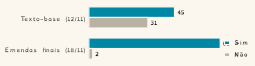
| Hoje, 9h | Decreto da escala 6x1 |
| Seg 23 | Sessão da Câmara (ajuste) |
| Ter 24 | Votação final possível |
| 16/12 | Jornada de 42 h começa |
A PF fez na quarta a Operação Cash Out: 59 mandados em PE, SP, RJ, PR e SC e mais de R$ 2,3 bi bloqueados, por suspeita de apostas ilegais, evasão de divisas e lavagem. Os investigados não tinham se manifestado até a publicação.
A nº 013 dizia que os destaques seriam votados na quarta, às 16h: foram votados e rejeitados, e o texto seguiu para a Câmara.
O jornal não toma partido. Publica fatos, números oficiais e declarações atribuídas, com o mesmo tratamento a todos os lados.
Tempo. Na noite de 16/11, Varjota recebeu 148 mm, Ipu e Ipueiras 111 mm e Reriutaba 108 mm, com ruas alagadas em Ipu. Desde então o céu fechou: entre 7h de 17/11 e 7h de 18/11 não choveu em nenhum posto informado. Para hoje, a Funceme prevê chuva isolada pouco provável, só no litoral de Fortaleza; amanhã, no litoral do Pecém. As máximas chegam a 38 °C no estado, com rajadas de 40 a 55 km/h.
Seca. O decreto 37.608/2026, publicado em 13/11, pôs 65 municípios em situação de emergência por 180 dias. Dos 144 açudes monitorados, 40 estão abaixo de 30%. A Funceme classifica o El Niño como "muito forte".
Mpox. Não saiu boletim novo depois de 17/11: Sobral segue com 3 casos e Alcântaras com 1. O Ceará é o 3º estado do país, atrás de RJ e SP, no painel nacional de 12/11, que soma 1.023 confirmados e 1 óbito em 2026. O Ministério anunciou a compra de 25 mil doses de vacina.
Santa Casa e UVA. A reitoria da universidade e a direção do hospital discutiram ampliar a parceria em formação de profissionais e integração entre ensino e serviço. Não foram divulgados números nem prazos.
Professores. Docentes da rede municipal cobram as gratificações por desempenho no Saeb anunciadas em 12/08/2025: R$ 2.800 (dois turnos), R$ 1.400 (um turno) e R$ 1.000 para secretários escolares. A Prefeitura não respondeu até a publicação.
Cidade. A Zona Azul voltou a vender talões de papel; o app continua valendo. Hoje, das 8h30 às 13h, o encontro Delas Day debate empreendedorismo feminino e IA, no Dia do Empreendedorismo Feminino. Fortaleza: o projeto do novo Hospital César Cals deve ficar pronto em março de 2027, antes da licitação.
Conteúdo educativo. Siga o protocolo institucional.
O programa Sua Nota Tem Valor junta pontos até 30/11: cada R$ 50 em notas com CPF vale 1 ponto, para até 5% de desconto (teto R$ 1 mil) num veículo sem débitos.
Sexta (20/11) é feriado nacional do Dia de Zumbi e da Consciência Negra (Lei 14.759/2023). Saúde, transporte e segurança funcionam; quem trabalha tem direito a folga compensatória ou pagamento em dobro, salvo acordo coletivo ou escala 12x36.
Câmbio. O dólar comercial subiu 1,48% e fechou a R$ 5,868 na quarta (18), o maior fechamento desde 15/04/2025. No ano, acumula alta de 6,90%. Um site registrou R$ 5,86 às 17h31; o fechamento oficial é o da Agência Brasil. O índice do dólar no mundo (DXY) subiu 0,23%, a 103,85.
Bolsa. O Ibovespa caiu 1,34%, a 167.537 pontos, puxado por bancos e Petrobras. A inflação implícita de um ano nos títulos públicos chegou a 7,76%, a maior desde 2015.
Fed. A ata da reunião de 27 e 28/10, que manteve os juros americanos em 3,75% a 4,00%, mostra que "quase todos" os dirigentes veem novas altas como apropriadas; dois aceitam subir mais de 0,25 ponto em dezembro se a inflação piorar. O índice de preços PCE de setembro ficou em 3,6%. A próxima reunião é em 8 e 9/12.
Copom. A Selic está em 13,75% desde a reunião de 4/11; a última do ano é em 8 e 9/12, na mesma data do Fed. No Focus de 16/11, a projeção do IPCA de 2026 caiu para 5,11% e a de 2027 subiu para 5,00%; a Selic do fim de 2027 subiu para 12,75%.
Atividade. O IBC-Br, prévia do PIB, caiu 0,20% em setembro e 0,9% no 3º trimestre, o primeiro trimestre negativo em um ano. Petróleo: o Brent caiu 1,28%, a US$ 91,95, e o WTI 2,76%, a US$ 82,31; o ouro recuou 3,16%. Diesel: a subvenção de R$ 2,12 por litro foi prorrogada até o fim de novembro.
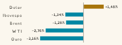
A Klabin parou a unidade de Otacílio Costa (SC) depois de um incidente na caldeira; dez funcionários foram hospitalizados. Gasolina e diesel recuaram na 1ª quinzena de novembro pelo índice Edenred Ticket Log: R$ 6,67 e R$ 7,39 por litro.
Shenzhen. Xi Jinping recebeu Donald Trump no aeroporto, com um abraço; Vladimir Putin foi recebido por outro dirigente chinês. Os três se cumprimentaram no banquete da Apec na quarta (18). Trump disse esperar "uma reunião trilateral histórica" e afirmou que os EUA se opõem a regras globais para a IA. Um alto funcionário americano disse à Reuters que não espera acordo nuclear. Na véspera, Xi e Putin defenderam um mundo multipolar.
Ucrânia. A ponte de Kerch, de 19 km, teve um vão rodoviário derrubado; a parte ferroviária segue de pé, com o arco danificado, e o Kremlin promete reconstruir. Em Kiev, ataques russos atingiram as pontes Norte e Sul e deixaram oito regiões sem luz. Moscou diz ter abatido 1.441 drones em um dia, um recorde. Segundo a Reuters, os ataques ucranianos reduziram em 45% o refino russo desde o fim de outubro.
Golfo. O Irã diz que três petroleiros pegaram fogo ao bater em minas a leste de Ormuz; a Reuters não confirmou. No petroleiro Navig8 Messi, a operadora fala em 11 feridos e 1 desaparecido, e o governo indiano diz que todos estão a salvo. A ONU registrou 136 incidentes com navios na região desde março; os EUA têm agora três porta-aviões no Comando Central.
Israel. O ministro da Defesa, Israel Katz, disse que o país manterá "indefinidamente" zonas de segurança em Gaza, no Líbano e na Síria. O Exército ordenou novas evacuações no centro de Gaza.
Clima e mais. A COP31, em Antália (Turquia), tem 21 temas abertos e deve acabar amanhã, talvez com atraso. A Estônia fecha a fronteira com a Rússia em 1/12. Cabo Verde reelegeu José Maria Neves com 64%. A Opas retirou dos EUA o status de país livre do sarampo.
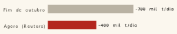
Em 1980, a vila de pescadores virou a primeira Zona Econômica Especial da China, ao lado de Hong Kong. O censo de 2020 contou cerca de 17,6 milhões de moradores; é hoje um polo de eletrônicos e drones.
A NOAA manteve o alerta em 12/11: a anomalia no Pacífico central (Niño 3.4) é de +2,5 °C e há cerca de 60% de chance de um evento histórico até março de 2027. No Nordeste, El Niño forte costuma significar menos chuva, o que explica a seca da p.3. Próximo boletim: 10/12.
1493 · Colombo desembarca em Borinquen, a ilha que hoje é Porto Rico, na segunda viagem.
1794 · EUA e Grã-Bretanha assinam o Tratado de Jay, que evita nova guerra e cria arbitragem de fronteiras.
1816 · É fundada a Universidade de Varsóvia.
1863 · Abraham Lincoln faz o Discurso de Gettysburg, com cerca de 272 palavras e "governo do povo, pelo povo, para o povo".
1889 · Quatro dias após a Proclamação, o Decreto nº 4 adota a bandeira republicana, desenhada por Teixeira Mendes, Miguel Lemos, Manuel Pereira Reis e Décio Villares.
1942 · Começa a Operação Urano, o cerco soviético que vira a Batalha de Stalingrado.
1946 · Afeganistão, Islândia e Suécia entram na ONU.
1969 · A Apollo 12 pousa na Lua: Pete Conrad e Alan Bean são o 3º e o 4º humanos a pisar lá.
1969 · No Maracanã, Pelé marca de pênalti o 1.000º gol, em Santos × Vasco, contra o goleiro Andrada.
1985 · Reagan e Gorbachev se encontram pela primeira vez, em Genebra.
1999 · A China lança a Shenzhou 1, primeira nave do seu programa tripulado.
2002 · O petroleiro Prestige afunda na costa da Galícia e causa um dos piores desastres ambientais da Espanha.
2010 · Explosão na mina Pike River, na Nova Zelândia, mata 29 mineiros.
As estrelas mostram o céu do Rio na manhã de 15/11/1889; hoje são 27, uma por estado e o DF. O uso dos símbolos nacionais segue a Lei 5.700/1971. O lema vem do positivismo de Auguste Comte (p.25).
A comissão real que investigou a explosão de 2010 apontou alertas de gás metano ignorados e pressa por produção. Na UTI vale a mesma lição: alarme repetido não é ruído, é sinal para parar e checar.
Respostas: 1889 · Pelé, Maracanã · Apollo 12.
Resistência. A pesquisa anual da OMS, respondida por 183 países, mostra que 173 têm plano nacional, contra 79 em 2017. Só 36% têm laboratório de referência capaz de testar bactérias e fungos prioritários; a meta é 80% até 2030. Em 2023, cerca de 1 em 6 infecções bacterianas confirmadas era resistente. Para o diretor-geral Tedros, "um plano não cumprido não ajuda ninguém". A OMS lançou um pacote essencial de testes diagnósticos para laboratórios.
Anvisa. Foi aprovado em 17/11 o icotroquinra, peptídeo oral de uso diário que bloqueia o receptor da interleucina 23, para psoríase em placas moderada a grave em adultos e em maiores de 12 anos com 40 kg ou mais. É a primeira opção oral dessa via; as atuais são injetáveis.
Covid. O Ministério da Saúde envia cerca de 1,41 milhão de doses extras a dez estados; o Ceará não está na lista. Pelo InfoGripe da Fiocruz, os casos de síndrome respiratória grave por Covid sobem, mas seguem baixos, com alta em BA, SP, MG, RJ, PR e DF.
Ciência. Um estudo pequeno, com 14 pacientes, publicado no NEJM, testou por 6 a 12 meses um inibidor da aldosterona sintase no hiperaldosteronismo primário: o marcador caiu 99% e a pressão, em média 25 mmHg. É resultado inicial, sem grupo controle grande. FDA: a agência aprovou o asundexian, inibidor do fator XIa, para prevenir novo AVC após AVC isquêmico não cardioembólico ou AIT de alto risco, e o giredestrant, para câncer de mama com mutação ESR1.
Datas. Hoje é o Dia Mundial do Banheiro e o Dia Interamericano do Saneamento. Sábado (21) é o Dia Nacional de Combate à Dengue: 10 minutos para olhar vasos, calhas e caixas-d'água.
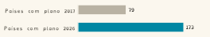
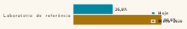
Conteúdo educativo. Siga o protocolo institucional.
Hoje também é o Dia Mundial do Câncer de Pâncreas. Diabetes que aparece depois dos 50 anos com perda de peso sem explicação merece investigação. A Pílula TEMI do dia trata do pâncreas na UTI (p.8).
No CMR GUIDE, já apresentado em agosto, o cardiodesfibrilador não reduziu o desfecho principal em pacientes com fração de ejeção de 36% a 50% e cicatriz na ressonância.
| Etapa | O que fazer | ⚠️ Pegadinha de prova |
|---|---|---|
| 1. Diagnóstico | 2 de 3: dor típica em faixa, lipase ou amilase ≥ 3 × o limite superior, imagem compatível. Ultrassom na admissão para procurar cálculo biliar. | TC na entrada não é rotina; o valor da lipase não mede gravidade. |
| 2. Gravidade | Atlanta revisada: leve (sem falência), moderadamente grave (falência < 48 h ou complicação local), grave (falência persistente > 48 h, escore de Marshall ≥ 2). | A gravidade se define pela evolução nas primeiras 48 h, não pela TC inicial. |
| 3. Fluido | Ringer lactato moderado: bolus de 10 mL/kg só se hipovolemia, depois 1,5 mL/kg/h, reavaliando em 12, 24, 48 e 72 h. | Hidratação agressiva (20 mL/kg + 3 mL/kg/h) só aumentou a sobrecarga (WATERFALL). |
| 4. Dieta e ATB | Via oral precoce se tolerar; senão, enteral (sonda gástrica serve) antes da parenteral. Sem antibiótico profilático, mesmo com necrose. | "Repouso pancreático" e nutrição parenteral de rotina são erros clássicos. |
| 5. Complicações | Necrose infectada (gás na TC, piora após 7–10 dias): antibiótico e step-up, drenar primeiro, necrosectomia de preferência após encapsular (~4 semanas). CPRE em 24 h só com colangite. | CPRE urgente sem colangite não reduziu complicações (APEC). Abdome tenso: meça a pressão intra-abdominal. |
Conteúdo educativo. Siga o protocolo institucional.
Mulher de 46 anos, dor em faixa, lipase 9 × o normal, triglicerídeo de 2.400 mg/dL, PAS 88 mmHg, creatinina 2,1 e SpO₂ 89% em ar ambiente. Sem cálculo no ultrassom.
Conduta: Ringer moderado com metas, oxigênio, vasopressor se a PAM não responder, insulina IV com glicose para baixar o triglicerídeo, dieta enteral precoce e sem antibiótico. Meça a pressão vesical e repita o escore em 48 h.
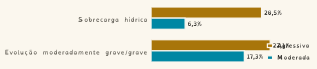
Biliar e álcool respondem pela maioria; depois, triglicerídeo alto, pós-CPRE, hipercalcemia e fármacos. Sem causa aparente: repetir o ultrassom e pensar em tumor acima dos 40 anos.
Até 25 mL de soro, paciente em decúbito dorsal, zero na linha axilar média e leitura no fim da expiração. Medida errada leva a decisão errada.
| Etapa | O que fazer | ⚠️ Pegadinha de prova |
|---|---|---|
| 1. Medir | Perfil lipídico sem jejum serve na maioria. Jejum ou LDL direto se triglicerídeo > 400 mg/dL. | A fórmula de Friedewald erra com TG alto; prefira Martin-Hopkins ou LDL medido. |
| 2. Meta | ESC/EAS 2019, LDL: muito alto risco < 55 mg/dL e queda ≥ 50%; alto < 70; moderado < 100; baixo < 116. | A diretriz brasileira (SBC) tem categorias próprias e metas mais baixas no risco extremo: use a do serviço. |
| 3. Estatina | Alta intensidade: atorvastatina 40–80 mg ou rosuvastatina 20–40 mg, que baixam o LDL em cerca de 50% ou mais. | Depois de síndrome coronariana, comece ou intensifique ainda na internação, não "no retorno". |
| 4. Não chegou | Some ezetimiba 10 mg; persistindo fora da meta no muito alto risco, inibidor de PCSK9. Reavalie em 4–8 semanas. | Trocar de estatina não substitui somar ezetimiba; dobrar a dose rende só cerca de 6% a mais. |
| 5. Triglicerídeo | ≥ 500 mg/dL: álcool zero, dieta, glicemia controlada e fibrato para proteger o pâncreas. TG 150–499 com estatina e alto risco: icosapenta de etila 4 g/dia. | Ômega-3 comum (EPA + DHA) não repetiu o benefício: o STRENGTH foi neutro. |
Conteúdo educativo. Siga o protocolo institucional.
Homem de 52 anos, infarto sem supra de ST, LDL de 142 mg/dL e TG de 380 mg/dL, em uso de sinvastatina 20 mg.
Conduta: troque por atorvastatina 80 mg antes da alta, oriente dieta e álcool e marque perfil em 4–8 semanas. Meta: LDL < 55 e queda ≥ 50%; se não chegar, ezetimiba.
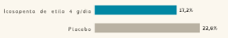
Hipotireoidismo, diabetes descompensado, álcool, doença renal, síndrome nefrótica e fármacos (corticoide, isotretinoína, antirretrovirais). Corrija a causa antes de culpar a genética.
O propofol vem em emulsão lipídica a 10% (1,1 kcal/mL). Em infusão prolongada, dose triglicerídeo e some essas calorias à meta nutricional.
Quadrante superior direito (espaço hepatorrenal, o de Morison, e a ponta inferior do fígado), superior esquerdo (esplenorrenal e acima do baço), pelve (atrás da bexiga) e subxifoide (pericárdio). O eFAST acrescenta os pulmões, atrás de pneumotórax. Líquido livre aparece como faixa anecoica que contorna os órgãos. No trauma instável, FAST positivo apressa o centro cirúrgico.
⚠️ Pegadinha: o FAST precisa de algumas centenas de mL para ficar positivo; negativo não descarta sangramento e deve ser repetido. Na pancreatite, líquido livre não é sinônimo de sangue.
Pela 4ª Definição Universal de Infarto: supra novo no ponto J em 2 derivações contíguas, ≥ 1 mm em todas, exceto V2–V3, onde o corte é ≥ 2 mm em homens de 40 anos ou mais, ≥ 2,5 mm em homens mais jovens e ≥ 1,5 mm em mulheres. Infradesnível recíproco fala a favor de infarto. Imitadores: pericardite (supra difuso côncavo com infra de PR), repolarização precoce, bloqueio de ramo esquerdo, hipertrofia, aneurisma, Brugada, hipercalemia, Takotsubo e doenças abdominais como a pancreatite.
⚠️ Pegadinha: na dúvida, compare com ECG antigo e repita em 15–30 min; troponina normal na chegada não exclui infarto.
No volume controlado (VCV), você fixa volume e fluxo: a pressão é que varia, e o platô é o alarme a vigiar. No pressão controlada (PCV), você fixa pressão e tempo inspiratório: o volume varia com a complacência e a resistência, e o fluxo é desacelerado. Nenhum dos dois reduz mortalidade por si; o que protege é volume e pressão dentro das metas.
⚠️ Pegadinha: em PCV, abdome distendido, secreção ou broncoespasmo derrubam o volume corrente sem alarme de pressão: ajuste o alarme de volume-minuto.
FAST negativo no instável? Repita: não descarta.
Supra com infra recíproco? Pense em infarto.
Em PCV, o que cai quando o abdome endurece? O volume corrente.
A oferta. A empresa vendeu 980 milhões de ações classe A, acima dos 825 milhões planejados, a US$ 83, acima da faixa de US$ 70 a 78, segundo a AP. A captação passa a da SpaceX, de cerca de US$ 75 bilhões em junho. O valor de mercado é de US$ 1,5 trilhão contando todas as classes de ações; outra conta, só com as ações em circulação, chega a cerca de US$ 1,08 trilhão. Google, Microsoft, Nvidia e outras compram US$ 26 bilhões em colocação privada. A estreia é hoje, depois do fechamento desta edição.
Mercado. Em Nova York, o Dow Jones caiu 1,6% e o S&P 500, 1,0%, com temor sobre os gastos em IA. A Nvidia, que faturou US$ 115,8 bilhões no trimestre, segue sob a CEO interina Colette Kress desde a saída de Jensen Huang, em 12/11.
Modelos. A OpenAI lançou em 17/11 o GPT-6.2 em duas versões, Astra e Sol, no ChatGPT, no Codex e na API; o Astra ficou 20% mais barato que o GPT-6 na API. A Microsoft lançou os modelos de programação MAI Code 2 e MAI Code 2 Flash. No Brasil, o Marco Legal da IA (PL 2.338) espera votação na Câmara, sem data.
Apple. A versão em uso é o iOS 27.2.1, de 9/11, com correções de segurança; o 27.3 está no 2º beta. Aparelhos antigos receberam o iOS 26.7.3 e o 18.7.12. A Apple divulgou os finalistas do App Store Awards.
Windows e Android. O pacote de novembro (KB5132061 no Windows 11) corrigiu uma falha do Outlook já explorada que vaza a credencial do usuário; a correção vem pela atualização do Office. O Android 17 QPR2 chegou a 23 modelos Pixel.
Alerta. A agência americana de cibersegurança (CISA) incluiu em 17/11 na lista de falhas exploradas uma brecha do Puppet, ferramenta de automação de servidores, com nota 9,4. A correção existe desde 3/11.
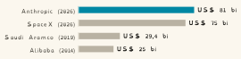
iPhone: Ajustes › Geral › Atualização de Software. Windows: Configurações › Windows Update. Office: Arquivo › Conta › Opções de Atualização.
Maracanã. O Athletico-PR saiu na frente com Kerwin Vargas, aos 10 minutos. Carrascal empatou aos 16 e Jorginho virou de pênalti aos 26 do 1º tempo: Flamengo 2 × 1. O artilheiro do campeonato, Kevin Viveros (21 gols), não jogou, suspenso pelo STJD; Pedro, com 20, passou em branco. Léo Pereira e Pulgar levaram o 3º amarelo e desfalcam o time no sábado.
Mineirão. O Palmeiras abriu o placar com Ramón Sosa aos 17 segundos do 2º tempo, mas Matheus Pereira empatou aos 28 e Khellven, contra, deu a vitória ao Cruzeiro, 2 × 1, aos 31.
Rodada. Corinthians 4 × 0 Botafogo, com três gols de Kaio César; Remo 2 × 0 Chapecoense; Coritiba 0 × 1 Santos, gol de Gabigol aos 48 do 2º tempo; Grêmio 0 × 0 Bahia. Hoje: Vitória × Bragantino e Vasco × Internacional, às 19h30, e São Paulo × Fluminense, às 21h30.
A degola. A Chapecoense já caiu. O Remo, com 32, precisa vencer tudo e torcer. Internacional e Grêmio têm 38 e ocupam o Z4 provisório; o Corinthians respirou com 40. O Vitória, também com 38, joga hoje.
Seleção. O Brasil fechou 2026 com 7 × 0 em Singapura, na terça: três gols de Vini Jr., um de Endrick, um de Estêvão, um de Rayan e um de Allan. O próximo compromisso de Ancelotti é na data FIFA de março de 2027.
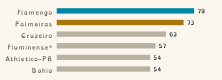
| 1 Flamengo | 79 | 15 Corinthians | 40 |
| 2 Palmeiras | 73 | 16 Vitória* | 38 |
| 3 Cruzeiro | 63 | 17 Internacional* | 38 |
| 4 Fluminense* | 57 | 18 Grêmio | 38 |
| 5 Athletico-PR | 54 | 19 Remo | 32 |
| 6 Bahia | 54 | 20 Chapecoense | 21 |
| 7 Atlético-MG | 51 | *34 jogos | |
| 8 Santos | 50 | Z4 provisório | |
| Sáb 21, 16h30 | Palmeiras × Fla |
| Dom 29, 16h | Coritiba × Fla |
| Qua 2/12, 21h30 | Fla × Chapecoense |
A final é em jogo único, Palmeiras × Grêmio, no domingo 6/12, no Mané Garrincha, em Brasília; horário a definir. O Palmeiras também decide a Libertadores em 28/11 (p.14).
Vila Real. O time sobralense lidera o Grupo B da Fares Lopes com 7 pontos, duas vitórias e um empate. No domingo (15), arrancou 1 × 1 com o Ceará B, gol de João Victor. No domingo (22), às 17h, encara o Atlético-CE. Na classificação geral, só o Icasa, com 9, está à frente. O torneio tem nove clubes e a final é em 6/12.
Rodada. Na terça, Palmácia 0 × 2 Fortaleza B. Na quarta, Atlético-CE 0 × 0 Ceará B e Quixadá 1 × 1 Guarani de Juazeiro. Hoje, às 17h, Fortaleza B × Tirol.
Acesso estadual. O Vila Real já tinha garantido vaga na Série B do Cearense de 2027 ao vencer o Pacatuba por 1 × 0, no estádio do Junco, em setembro. O Guarany de Sobral parou nas quartas da Série B estadual de 2026 e não tem jogo oficial neste fim de ano; o Cearense de 2027, com 10 clubes, não terá time de Sobral.
Fortaleza. 4º da Série B com 65 pontos, decide em casa. Ida: Criciúma × Fortaleza, domingo (22), às 16h, no Heriberto Hülse. Volta: sábado (28), às 20h, no Castelão. O outro confronto é Atlético-GO × Vila Nova.
Ceará. Empatou 1 × 1 com o CRB na última rodada e terminou em 16º, com 44 pontos, fora da degola. O CRB ficou em 7º, fora dos playoffs no desempate; o Sport, em 9º; o Náutico, em 15º.
Série C. Santa Cruz, Maringá, Ferroviária e Inter de Limeira sobem; Confiança e Itabaiana, de Sergipe, caem. O Floresta parou na 2ª fase.
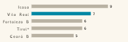
| Hoje, 17h | Fortaleza B × Tirol |
| Dom 22, 16h | Criciúma × Fortaleza |
| Dom 22, 17h | Vila Real × Atlético-CE |
| Sáb 28, 20h | Fortaleza × Criciúma |
Cearense: 6/1 a fevereiro, turno único de 9 rodadas, Clássico-Rei em 31/1. Copas regionais, como a do Nordeste: 24/3 a 13/6. Série A: 27/1 a 1/12.
Com 37 °C à tarde, leve água, boné e protetor; chegue cedo e combine um ponto de encontro com a família caso o celular fique sem sinal.
Fórmula 1. Kimi Antonelli, da Mercedes, tem 390 pontos, 111 à frente de Max Verstappen, mais do que ainda está em disputa. A Mercedes também já levou o título de construtores, com 652, contra 510 da Ferrari. Gabriel Bortoleto é o 14º, com 14 pontos, e a Audi, a 8ª. Segundo o Lance!, a equipe recorreu de um ponto do GP da Itália, com julgamento em 25/11.
MotoGP. No GP de Portugal, neste fim de semana, Marc Márquez é campeão se vencer a corrida curta de sábado: lidera com 60 pontos sobre Jorge Martín. Valência fecha o ano. Stock Car: Felipe Baptista venceu a Corrida do Milhão; Fraga lidera com 973 pontos antes da Super Final em Interlagos, com a prova principal em 13/12.
Tênis. Sem Jannik Sinner, lesionado, Carlos Alcaraz venceu Daniil Medvedev por 6/2 6/4 e está na semifinal do ATP Finals, ao lado de Alexander Zverev; Frances Tiafoe bateu Flavio Cobolli por 7/6 6/0. Semifinais no sábado, final no domingo. A Copa Davis decide de 24 a 29/11, em Bolonha, sem o Brasil. João Fonseca, parado por lesão desde setembro, fecha o ano entre o 40º e o 46º lugar, conforme a fonte, e faz exibição contra Roger Federer em 5/12, no Pacaembu.
Seleções. Na Liga das Nações, a Noruega virou sobre a Dinamarca por 3 × 2, com dois gols de Haaland, o segundo de pênalti nos acréscimos, e Portugal venceu o País de Gales por 3 × 2. França, Bélgica, Alemanha, Holanda, Inglaterra, Portugal e Noruega estão nas quartas. A Champions volta na terça (25).
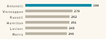
| Qui 19, 21h30 | Treino livre 1 |
| Sex 20, 1h | Treino livre 2 |
| Sáb 21, 1h | Classificação |
| Dom 22, 1h | Corrida, 50 voltas |
Corrida à 1h na véspera de plantão é troca ruim. Grave, desligue as notificações e assista ao acordar, sem placar.
Prêmio. O COB anunciou na quarta os melhores de 2026: a ginasta Rebeca Andrade, Alison dos Santos, recordista mundial dos 400 m com barreiras, e Lucas Pinheiro Braathen, primeiro ouro do Brasil em Jogos de Inverno. A cerimônia é em 2/12. Nos Jogos Olímpicos da Juventude, em Dacar, o Brasil somou 7 medalhas e foi o melhor das Américas.
Futebol feminino. O São Paulo é o campeão brasileiro de 2026, com recorde de 49.405 pessoas no Morumbis. Arthur Elias convocou 26 jogadoras para enfrentar o Japão em 29/11, em Hiroshima, e em 5/12, em Okayama; Marta e Kerolin estão lesionadas, e Giseli Silva, do Grêmio, é a novidade. O Internacional ganhou a Copa do Brasil Feminina.
Vôlei. Na Superliga Feminina, o Sesc RJ Flamengo bateu o Sesi Bauru por 3 × 0 fora de casa e soma 18 pontos, em 6 jogos e nenhum set perdido; o Minas, também invicto, venceu o Fluminense por 3 × 0. Na quarta, Barueri 3 × 0 Brasília e Praia Clube 3 × 0 Londrina. Próximo: Sesc RJ Flamengo × Osasco, segunda (23), às 21h. No masculino, o Sada Cruzeiro lidera invicto, com 17.
Basquete. O Flamengo é o 5º do NBB, com 5 vitórias e 2 derrotas, e joga hoje às 19h contra o Unifacisa. Pela Liga Sul-Americana, venceu o Boca por 82 × 74. Na NBA, Quentin Grimes fez 47 pontos na vitória dos Lakers sobre os Hornets na prorrogação; Wembanyama teve 25 pontos e 18 rebotes, mas os Spurs perderam para os Pistons.
UFC. No UFC 334, Kayla Harrison finalizou Amanda Nunes no 4º round e manteve o cinturão dos galos; quatro brasileiros venceram no card.
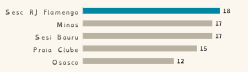
| Hoje, 19h | Unifacisa × Flamengo (NBB) |
| Sáb 21, 16h | São José × Sada Cruzeiro |
| Seg 23, 21h | Sesc RJ Fla × Osasco |
| Dom 29 | Japão × Brasil (fem.) |
Exemplo de constância: atletas de alto nível treinam o básico todo dia. Na prova de título, vale o mesmo: um bloco de questões por dia vence a maratona de véspera.
GTA VI. Com 153 críticas, a média no Metacritic era 99 na manhã de quarta; no OpenCritic, 98, com 100% de recomendação em 65 análises. O jogo sai para PS5 e Xbox Series X|S, sem versão para PC. No Brasil, custa R$ 449,90 na edição padrão e R$ 549,90 na Ultimate; o download tem cerca de 212 GB. No Xbox One, só pela nuvem.
Game Awards. Os indicados saíram em 17/11 e a festa é em 10/12. Concorrem a jogo do ano: 007 First Light, Control Resonant, GTA VI, Phantom Blade Zero, Resident Evil Requiem e a nova versão de Zelda: Ocarina of Time.
Streaming. Disney+ e Hulu viram um aplicativo só em dezembro.
Mercúrio. A BepiColombo, das agências europeia e japonesa, faz a inserção orbital em 21/11. Em 9 e 10/12, os dois módulos se separam; a ciência começa em abril de 2027. Mercúrio é difícil porque a sonda precisa frear contra a gravidade do Sol, e por isso a viagem incluiu nove sobrevoos de planetas.
Starship. No voo 15, em 13 e 14/11, o estágio superior voltou da órbita depois de 14 voltas e foi agarrado pela torre, uma estreia. O propulsor explodiu sobre o golfo do México. A Artemis III segue sem data oficial.
Mercúrio tem o dia solar mais longo do Sistema Solar entre os planetas rochosos: de um nascer do Sol a outro passam cerca de 176 dias da Terra, quase dois anos de Mercúrio.
| Hoje | GTA VI · Anthropic na Nasdaq · Shenzhen | Sáb 21 | BepiColombo · Palmeiras × Flamengo |
| Sex 20 | Feriado · COP31 termina | Dom 22 | GP de Las Vegas (1h) · Fortaleza no playoff |
| Seg 23 | Câmara e o ajuste fiscal | Sex 27 | Black Friday |
BYD. A montadora informou na terça (17) que toda a linha híbrida produzida em Camaçari (BA) aceitará etanol até o fim de 2027. O sedã King híbrido plug-in flex, reestilizado, chega no 1º semestre de 2027. O Dolphin GT híbrido já tem estoque no país e deve ser lançado no 1º trimestre, abaixo do preço do Atto 2 (R$ 149.990 a R$ 169.990).
Vendas. Na parcial de novembro até 14/11, a Fiat Strada lidera com 5.767 emplacamentos, seguida por Argo (3.547), HB20 (3.302), BYD Dolphin Mini (3.254) e Yaris Cross (2.760). De janeiro a outubro, o país vendeu 4,72 milhões de veículos (+12,6%); os eletrificados somaram 524.766, alta de 130%.
Bomba. Na semana de 8 a 14/11, a ANP achou no Ceará gasolina a R$ 6,91, etanol a R$ 4,95 e diesel S10 a R$ 7,29. O botijão de 13 kg custa R$ 115,99 no estado; em Fortaleza, subiu pela 5ª semana. No país, o etanol subiu 1,6%, a R$ 4,41.
A conta. R$ 4,95 ÷ R$ 6,91 = 0,72. Acima de 0,70, a gasolina tende a render mais por real gasto. O número exato do seu carro está na etiqueta do Inmetro: divida o consumo com etanol pelo da gasolina.
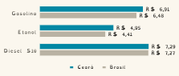
Nenhum chamado de grande alcance foi encontrado nesta semana. Consulte a placa no site do Procon ou no gov.br (Recall de veículos) uma vez por ano.
Pneus calibrados com o carro frio, água e celular carregado. Com o calor de 37 °C, confira o nível do líquido de arrefecimento só com o motor frio.
| Sinal | O que costuma ser | O que fazer |
|---|---|---|
| Vídeo de famoso indicando loja | Rosto ou voz manipulados por IA. | Procure a marca pelo app oficial, nunca pelo anúncio. |
| QR Code ou "copia e cola" | Pix para recebedor diferente da loja. | Leia o nome do recebedor antes de confirmar. |
| Depoimentos perfeitos | Avaliações compradas e fotos de banco de imagem. | Busque o CNPJ e a reputação fora do site. |
| Garantia ou seguro já no carrinho | Venda casada, proibida pelo CDC. | Retire o item; é direito seu. |
| "De R$ 2.000 por R$ 1.000" | "Metade do dobro". | Confira o histórico de 90 dias. |
O prazo prometido no anúncio vale como contrato. Atrasou: você pode exigir a entrega, aceitar outro produto ou cancelar com devolução do dinheiro corrigido (CDC, art. 35). Guarde prints do anúncio e do pedido.
"Pare, pense e desconfie", resume a Febraban. Urgência é a ferramenta preferida de quem engana: oferta que "acaba em 10 minutos" pode esperar 72 horas.
| Item | Veredito | Por quê |
|---|---|---|
| GTA VI (R$ 449,90) | ⏳ Só em loja oficial | "Chave barata" de site desconhecido é risco. Com plantão no feriado, jogue na folga. |
| "Ações da Anthropic" por mensagem | 🔴 Golpe | Ninguém legítimo oferece ação por WhatsApp. O jornal não trata de renda variável e não recomenda compra. |
| Eletrônico importado com dólar alto | ⏳ Esperar | Câmbio em alta encarece; sem necessidade real, a compra espera. |
| Celular "preço de Black" antes do dia 27 | ⏳ Anotar e comparar | Anote hoje e compare em 27/11 em dois sites oficiais. |
| Garantia estendida | 🔴 Não no impulso | Leia o que cobre; muitas vezes repete a garantia do fabricante. |
Ordem segura: dívida cara primeiro, depois reserva de emergência, e só então a compra da lista.
iPhone: Ajustes › seu nome › Assinaturas. Android: Play Store › Pagamentos e assinaturas. Cancele o que não usou nos últimos 30 dias.
Anote hoje, num só lugar, o preço de cada item da lista em dois sites. Em 27/11, a comparação leva um minuto.
Se a oferta exige decidir agora, a resposta é não. Boa oferta sobrevive a 72 horas.
Deixe as atualizações do celular e do computador para a noite, com carregador ligado e Wi-Fi. Antes, confira se o backup está em dia; depois, abra os apps de banco e do hospital para ver se pedem novo login.
O núcleo da doutrina. No Pequeno Manual do Investidor, a ideia central é acumular patrimônio ao longo da vida. A renda verdadeira vem do trabalho; o investimento é o lugar onde ela se guarda e cresce. A renda fixa tem o papel de preservar o poder de compra e dar segurança. Não se tenta acertar a hora de entrar ou sair: define-se um percentual fixo para cada parte da carteira e faz-se aporte regular, rebalanceando quando a proporção desanda. A doutrina também trata de ações; este jornal apenas informa que não cobre esse tema.
Os números de hoje. A Selic está em 13,75%. A poupança rende 0,5% ao mês mais a TR; com a TR de 0,1196% em 1/11, dá cerca de 0,62% no mês. No Tesouro Direto, em 16/11, o Tesouro Selic pagava Selic + 0,11%, o Prefixado 2032, 15,26% ao ano, e o IPCA+ 2032, inflação + 7,77%. As taxas devem ter subido com o dólar.
Imposto. A tabela regressiva continua: 22,5% até 180 dias, 20% até 360, 17,5% até 720 e 15% depois. LCI, LCA, CRI e CRA seguem isentos para pessoa física. Há um projeto na Câmara (PL 5.853/2026) que propõe 7,5% sobre eles; por enquanto é só proposta.
Garantia. O FGC cobre até R$ 250 mil por CPF por instituição, com teto de R$ 1 milhão a cada 4 anos. Tesouro Direto não depende do FGC: o risco é o do governo federal.
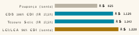
| Reserva de emergência | Liquidez diária |
| Objetivo com data | Vencimento perto da data |
| Título longo | Pensado para ir até o fim |
Vender antes do vencimento expõe à marcação a mercado: o preço oscila com os juros.
Dívida para investir, produto que você não entende, taxa alta que come o rendimento e decisão tomada no susto.
Automatize: aporte no dia do pagamento, por débito programado. Decisão automática não depende da força de vontade do dia.
Copom e Fed em 8 e 9/12. 13º até 30/11 (1ª parcela). Antes de gastar, decida a parte que vai para a reserva.
Imóvel. Pelo índice FipeZap, o aluguel subiu 9,13% nos 12 meses até setembro, contra 4,58% do IPCA; o preço de venda, 5,51%. O financiamento com recursos da poupança somou R$ 13,6 bilhões em setembro, 19,7% menos que em agosto, segundo a Abecip.
Terreno. Peça a certidão de matrícula atualizada no Cartório de Registro de Imóveis: ela mostra o dono, as dívidas e as penhoras. Loteamento precisa estar registrado (Lei 6.766/1979). Pela lei, só é dono quem registra a escritura (Código Civil, art. 1.245); "contrato de gaveta" não basta. Some ITBI, escritura, registro e a consulta de zoneamento na prefeitura.
Veículo. Carro é consumo: perde valor todo ano e custa seguro, IPVA e manutenção. No usado, consulte débitos e restrições no Detran-CE, faça vistoria cautelar e só pague com a autorização de transferência eletrônica em mãos. A transferência deve ser feita em 30 dias.
Compra e revenda. O MEI fatura até R$ 81 mil em 2026; a LC 238/2026 eleva para R$ 110 mil em 2027 e R$ 140 mil em 2028. O DAS de 2026 vai de R$ 82,05 a R$ 87,05. Emita nota, guarde a nota de compra e respeite a garantia legal do CDC: 30 dias para bem não durável, 90 para durável. Comprar mercadoria de origem duvidosa, por preço muito abaixo do mercado, pode ser receptação (Código Penal, art. 180).
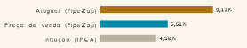
Terreno, carro, consórcio ou "oportunidade única": nada se assina no mesmo dia. Leia, durma, pergunte a alguém de fora.
☐ Matrícula ou documento do bem · ☐ Certidões do vendedor · ☐ Custo total escrito (taxas, impostos, juros, CET) · ☐ Contrato lido por inteiro · ☐ Pagamento só para a conta do vendedor ou do cartório · ☐ 72 horas.
O dólar fechou a R$ 5,868 na quarta, 5ª alta seguida (p.4). Ninguém acerta a hora do câmbio: urgência é sinal para esperar.
O ajuste fiscal passou no Senado e vai à Câmara na segunda (23). Projeto de lei complementar precisa de 257 votos; se mudar, volta ao Senado (p.2).
EUA, China e Rússia se reúnem hoje em Shenzhen (p.5). Mesmo com as minas perto de Ormuz, o Brent caiu 1,28% na quarta.
Flamengo 79 × Palmeiras 73 com 9 pontos em jogo; Léo Pereira e Pulgar estão suspensos (p.12). O GTA VI tem cerca de 212 GB (p.16). A Anthropic estreia hoje na Nasdaq; ninguém legítimo vende ação por mensagem (p.11 e 19).
O Gepeto é o mascote do Agente Editorial 360, que é feito com o Claude, da Anthropic. Ele não tem opinião política e cita as fontes.
O gancho. A Prefeitura de Belo Horizonte publicou em 17/11 o mapeamento de 100 benzedeiras e raizeiras: 77 são mulheres, 73% têm 45 anos ou mais, 96% usam plantas medicinais e 88% passam o saber adiante. O relatório sugere registrar a prática como patrimônio imaterial e dialogar com o SUS.
Da planta à pílula. A casca do salgueiro já aparece no Papiro de Ebers; em 1897, Felix Hoffmann, na Bayer, sintetizou o ácido acetilsalicílico. Em 1785, o médico William Withering publicou dez anos de observações com a dedaleira, origem do digitálico. Em 1972, a equipe da chinesa Tu Youyou isolou a artemisinina seguindo uma receita do século IV, de Ge Hong, que mandava usar a planta sem ferver: Nobel de 2015.
O Ceará no mapa. Em 1983, o professor Francisco José de Abreu Matos, da UFC, criou o projeto Farmácias Vivas: hortas de plantas com eficácia estudada, identificação botânica correta e preparo orientado por farmacêutico. A ideia foi parar no SUS pela Portaria 886, de 2010, depois das políticas nacionais de práticas integrativas e de plantas medicinais, ambas de 2006.
A reza. No sertão, a rezadeira benze com raminhos contra quebranto, mau-olhado e "espinhela caída". O que a ciência reconhece nela é o acolhimento: alguém que escuta, toca e dá sentido ao sofrimento. É cuidado cultural, não tratamento de doença.
| Ideia | Hoje |
|---|---|
| Aspirina veio do salgueiro | ✅ História documentada |
| Artemisinina contra malária | ✅ Padrão mundial |
| Óleo de hortelã no intestino irritável | 🟡 Benefício modesto |
| Benzimento acolhe e conforta | 🟡 Apoio, não cura |
| Boldo "limpa o fígado" | 🔴 Sem evidência |
| Garrafada no lugar do remédio | 🔴 Risco real |
Pergunte por chás, garrafadas e "remédios naturais" na admissão. Erva-de-são-joão reduz o efeito de varfarina, ciclosporina e anticoncepcional; garrafada não tem composição definida e pode lesar o fígado. Pergunte sem julgar: quem se sente respeitado conta tudo.
Vem do grego phármakon, que queria dizer ao mesmo tempo remédio e veneno. A dose separa um do outro, lição que vale para a planta do quintal e para a droga da UTI.
A Religião da Humanidade. O filósofo francês Auguste Comte, pai do positivismo, criou nos anos 1850 um culto sem deus, dedicado ao "Grande Ser", a Humanidade. Tinha catecismo, sacramentos e um calendário de 13 meses de 28 dias, cada um com o nome de um grande personagem; o 13º mês chama-se Bichat, em homenagem ao anatomista Xavier Bichat, pai da histologia.
A bandeira. No Rio, Miguel Lemos e Raimundo Teixeira Mendes fundaram a Igreja Positivista do Brasil e ergueram o Templo da Humanidade, na Glória. Os dois desenharam a bandeira adotada em 19/11/1889. O lema resume a fórmula de Comte: o amor por princípio, a ordem por base e o progresso por fim; o "amor" ficou de fora.
O canal. Ferdinand de Lesseps, nascido em 19/11/1805, abriu o Canal de Suez em 1869 e tentou repetir o feito no Panamá a partir de 1881. A obra francesa faliu em 1889, com cerca de 22 mil mortos, sobretudo por febre amarela e malária. Ainda se culpavam os "miasmas". O cubano Carlos Finlay propôs o mosquito em 1881; a comissão de Walter Reed confirmou em 1900. Com o combate ao vetor de William Gorgas, os EUA terminaram o canal em 1914.
A geopolítica. Para obter a zona do canal, os EUA apoiaram a separação do Panamá da Colômbia em 1903. A saúde pública decidiu quem ficaria com uma das rotas mais estratégicas do planeta.
De 10 a 16/11/1904, o Rio viveu a Revolta da Vacina contra a lei que tornou obrigatória a vacina da varíola. Houve mortos e centenas de presos. Obrigar sem explicar alimentou boatos; a vacina, depois, ajudou o mundo a erradicar a varíola em 1980.
| 20/11 | Zumbi e Consciência Negra |
| 21/11 | Apresentação de Nossa Senhora |
| 22/11 | Cristo Rei · Santa Cecília |
| ~24/11 | Guru Nanak (lua cheia) |
| 29/11 | 1º Domingo do Advento |
Panaceia vem de Panákeia, deusa grega do "remédio para tudo", filha de Asclépio, o deus da medicina. Ela nunca existiu fora do mito, e o remédio para tudo também não.
Positivismo · febre amarela (e malária) · Carlos Finlay.
✝️ Bíblia · Gálatas 3:28 e Atos 10:34
"Não há judeu nem grego, nem escravo nem livre." · "Deus não faz acepção de pessoas."
Reflexão: numa sociedade de castas e escravidão, a frase de Paulo foi revolucionária. Hoje: cumprimente pelo nome quem limpa, cozinha e vigia o hospital.
✡️ Torá · Gênesis 1:27 e Levítico 19:34
"Deus criou o ser humano à sua imagem." · "Amarás o estrangeiro como a ti mesmo."
Reflexão: se toda pessoa carrega a mesma imagem, ninguém é descartável. E o estrangeiro é lembrado porque "fostes estrangeiros no Egito". Hoje: acolha quem chegou agora à equipe.
📜 Talmude · Mishná, Sanhedrin 4:5
"Para que ninguém diga: meu pai é maior que o teu." · "Quem salva uma vida salva um mundo inteiro."
Reflexão: os sábios explicam que a humanidade começou de um só para que nenhuma linhagem se julgue superior. Hoje: lembre que o paciente do leito 7 é um mundo inteiro para alguém.
☪️ Alcorão 4:135 · Sermão de Despedida (hadith)
"Sede firmes na justiça, ainda que contra vós mesmos." · Nenhum árabe é superior a um não árabe, senão pela piedade.
Reflexão: justiça que só vale para os outros não é justiça. A tradição atribui ao Profeta a igualdade de todos diante de Deus. Hoje: reconheça um erro seu antes de apontar o alheio.
☯️ Confúcio · Analectos 15:39 e 15:24
"No ensino, não há distinção de classes." · "O que não queres para ti, não faças aos outros."
Reflexão: Confúcio aceitava alunos de qualquer origem, desde que quisessem aprender. Hoje: ensine algo a um interno ou técnico sem pressa e sem ironia.
☸️ Budismo · Sutta Nipata 1.7 (Vasala Sutta)
"Não é pelo nascimento que alguém se torna nobre; é pelos atos."
Reflexão: o Buda rejeitou a casta de nascença como medida de valor. Nobreza é conduta, repetida todo dia. Hoje: um ato de bondade que ninguém vai ver.
| Ideia | Onde aparece |
|---|---|
| Mesma origem, mesma dignidade | Gênesis, Mishná, Gálatas, Sermão de Despedida |
| Valor pelos atos | Sutta Nipata, Alcorão 49:13, Analectos |
| Acolher o estrangeiro | Levítico, Mateus 25:35, hospitalidade islâmica |
| Reciprocidade | Analectos 15:24, Mateus 7:12, Hilel (Shabat 31a) |
Das tradições bantas da África austral: umuntu ngumuntu ngabantu, "uma pessoa é pessoa por meio das outras pessoas". Na UTI, ninguém salva ninguém sozinho.
O estudo. Em 2020, pesquisadores da Universidade de Michigan compararam a saturação do oxímetro com a da gasometria arterial colhida logo depois. Com o oxímetro marcando 92% a 96%, a saturação real estava abaixo de 88% em 11,7% das medidas de pacientes negros, contra 3,6% nas de pacientes brancos. É a chamada hipoxemia oculta.
Por que importa. Oxigênio, alta, critério de gravidade e entrada em protocolos dependem desse número. A FDA publicou em 2025 uma proposta de regras para testar oxímetros em diferentes tons de pele. Em outra área, a equação de função renal CKD-EPI de 2021 deixou de usar raça.
Juliano Moreira (1872–1933), baiano, formou-se em medicina aos 18 anos. Dirigiu o Hospício Nacional de Alienados por quase três décadas, tirou grades e camisas de força e combateu as teorias que atribuíam doença mental à raça. É considerado um dos fundadores da psiquiatria científica no Brasil.
Luiz Gama (1830–1882), filho de mãe africana livre, foi vendido como escravo pelo pai aos 10 anos. Aprendeu a ler, provou a própria liberdade e, como advogado sem diploma, libertou na Justiça mais de 500 pessoas escravizadas. A OAB o reconheceu como advogado em 2015.
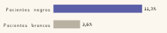
Conteúdo educativo. Siga o protocolo institucional.
Que decisão minha depende de um número que pode estar errado para alguns pacientes?
Pressa é a maior inimiga da dignidade. Antes de sair do leito, 10 segundos: "ficou alguma dúvida?".
A obra de Luiz Gama reunida em volumes recentes e a história do Hospício Nacional contada pela Fiocruz.
Regularidade. Num estudo com cerca de 60 mil adultos do UK Biobank, que usaram sensor de pulso, quem tinha o horário de sono mais regular teve risco de morte de 20% a 48% menor que o grupo mais irregular, conforme o modelo. A regularidade previu melhor que a duração. Para o plantonista: no feriado, não "pague" o sono dormindo até meio-dia; acorde no máximo 1 a 2 horas depois do habitual.
Natureza. Numa pesquisa com 19.806 ingleses, quem passava pelo menos 120 minutos por semana em parques, praias ou campo relatou mais saúde e bem-estar; acima disso, o ganho não cresceu, e tanto fazia ser de uma vez ou em várias saídas. Um fim de tarde no açude ou na serra conta.
Caráter. Carolina Maria de Jesus catava papel em São Paulo e escrevia diários em cadernos achados no lixo; Quarto de Despejo, de 1960, foi traduzido para mais de dez línguas. Antonieta de Barros, professora em Santa Catarina, foi a primeira mulher negra eleita deputada no Brasil, em 1934, e é autora da lei que criou o Dia do Professor.
Maneiras. Feriado em família pede o básico: celular longe da mesa, ouvir até o fim e dividir a louça. Ninguém lembra do prato; todos lembram do clima.
| Horário regular de sono | ✅ |
| Luz do sol de manhã ajusta o relógio | ✅ |
| 120 min/semana na natureza | 🟡 |
| "Recuperar" sono no fim de semana | 🟡 |
| Banho de sal grosso "descarrega" | ✨ |
Feriado não é dia de zerar pendências. Escolha uma tarefa útil, faça pela manhã e libere o resto do dia sem culpa.
Leitura cultural e simbólica: num teste duplo-cego publicado na Nature em 1985, astrólogos não acertaram perfis acima do acaso. Use como lembrete de atitude, nunca como decisão.
Janelas abertas cedo e fechadas no pico do calor ✅, roupa clara e leve ✅, uma planta à vista 🟡. Para ele e para ela: roupa limpa, perfume discreto e protetor solar. Elegância é discrição.
| Planta | Tradição ✨ | O que se sabe |
|---|---|---|
| Mandacaru | Flor anuncia chuva | Floresce à noite; resiste à seca |
| Arruda | Proteção | ⚠️ Irrita a pele ao sol; evitar na gestação |
| Babosa | Cura de feridas | Gel na pele: efeito modesto; não ingerir |
| Manjericão | Prosperidade | Ótimo na cozinha |
A OMS recomenda nenhuma tela para menores de 2 anos e até 1 hora por dia dos 2 aos 4. Feriado é boa hora para brincar no chão, sem tela, por 20 minutos.
Nos estudos de John Gottman, casais estáveis tinham cerca de 5 interações positivas para cada negativa durante conflitos. Elogio sincero é investimento.
Em Ajustes › Foco, crie um modo "Folga": só ligações de favoritos e do hospital passam. Agende para sexta, das 8h às 20h.
Tecla Windows + V guarda os últimos itens copiados. Ative uma vez e pare de perder o texto que copiou antes.
Antes de pagar por QR Code, confira na tela do banco o nome e o CNPJ do recebedor. Nome diferente da loja: pare.
Em gráficos, o atributo alt deve dizer o dado, não "imagem de gráfico". Quem usa leitor de tela agradece, e o Google também.
A IA rascunha o comentário; você confere na diretriz, cita a fonte e vende o pacote. O valor está na revisão humana, não no texto gerado.
Hoje, antes de sair, escreva num papel as três primeiras tarefas de segunda. Você descansa sem a lista girando na cabeça.
Pancreatite grave: Ringer moderado, comida cedo, sem antibiótico profilático e paciência para intervir. Fora da UTI: dólar alto e Black Friday perto pedem lista e 72 horas.
Hoje, em 5 minutos, confira o perfil lipídico do último paciente com infarto que você atendeu: ele saiu com estatina de alta intensidade?
Hidratação agressiva na pancreatite · antibiótico "para proteger" a necrose · Friedewald com TG alto · confiar no FAST negativo · comprar no susto do câmbio · Pix por QR Code sem ler o recebedor.
Jornal Diário 360 · Radar 360 Circunstancial · Ano I, nº 014 · fechamento em 19/11/2026, na madrugada, antes da reunião de Shenzhen e da estreia da Anthropic na Nasdaq. Produzido pelo Agente Editorial 360 com o Claude (Anthropic). Atualizações na p.2. Esportes ampliados (p.12–15), educação financeira sem renda variável (p.20–21), tirinhas com personagens próprios (p.22–23), Arcanos (p.24–25), Honra 360 e Equilíbrio 360 (p.26–29). Em saúde, siga o protocolo institucional; em finanças e compras, não há recomendação nem comissão. Gráficos e ilustrações originais; nenhuma foto de terceiros. Texto em OpenDyslexic.